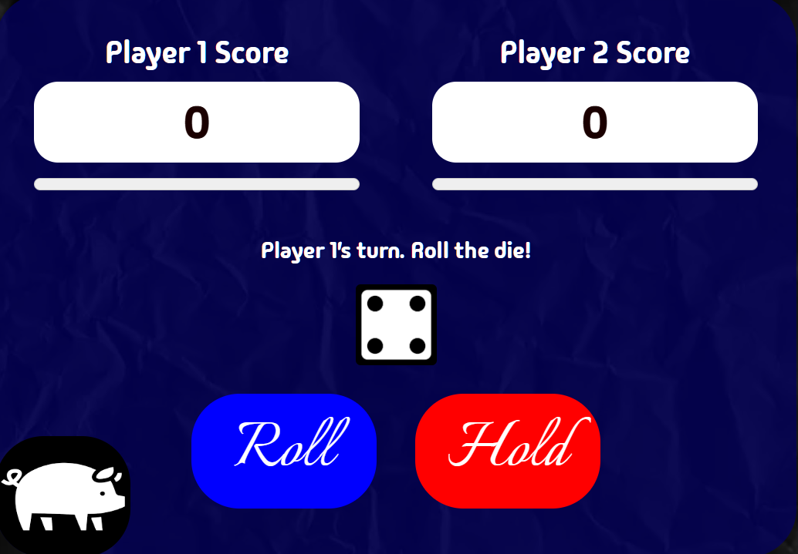

Welcome to
The Game of Pig
Pig is a folk jeopardy dice game described by John Scarne in 1945, and was an ancestor of the modern game Pass the Pigs® (originally called PigMania®).

Pig is a folk jeopardy dice game described by John Scarne in 1945, and was an ancestor of the modern game Pass the Pigs® (originally called PigMania®).